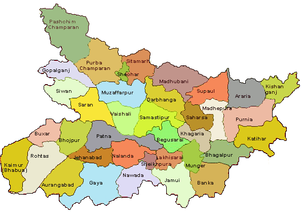
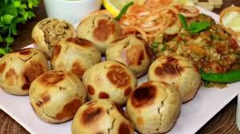
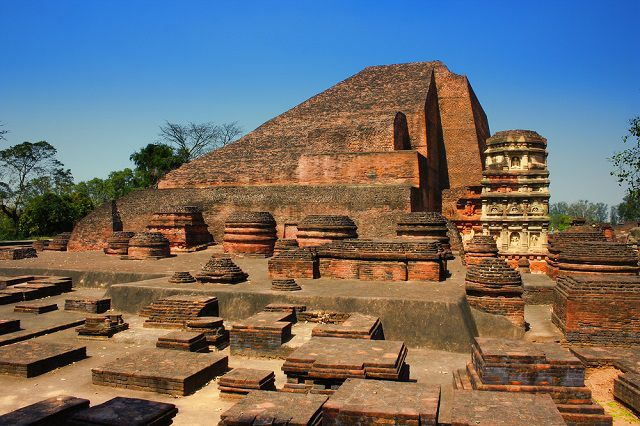

By: Eccha Kumari 8 A
Posted on: March 5,2026

Bihar, located in eastern India with its capital at Patna, is a historically significant state known as the birthplace of Buddhism and Jainism. As the third most populous state it features a rich cultural heritage, including the ancient Nalanda University and the sacred Mahabodhi Temple in Bodh Gaya. Agriculture is key, and it is known for unique cuisine like Litti Chokha.
Bihar's cuisine is defined by rustic, nutritious, and flavorful dishes, with Litti-Chokha (wheat balls filled with roasted gram flour, served with mashed veggies) being the most iconic, followed by Sattu Paratha, Dal Pitha, and snacks like Thekua and Tilkut. It is a blend of vegetarian and non-vegetarian dishes, often featuring mustard oil, spices, and roasted grain flour.

The main native languages are Maithili, Magahi and Bhojpuri, but there are several other languages being spoken at smaller levels.
Festivals & Fairs: Chhath Puja:The most significant festival, dedicated to the Sun God, characterized by rigorous fasting and offerings at riverbanks. Cultural Arts: Madhubani Painting has moved from mud walls to global galleries, while Bhagalpuri Silk remains a major textile export.
Bihar's old name is 'Vihar'. The term comes from the word 'Viharas,' which means Buddhist monks' resting place. However, the Muslim rulers of the 12th century first called the state 'Bihar.

Bihar's top 5 cities by population generally include Patna, the capital, followed
by Gaya, Bhagalpur, Muzaffarpur, and often Biharsharif or Darbhanga,
with Patna being significantly the largest and a major hub for governance, commerce, and education
Patna: The state capital and largest city, a major economic and administrative center.
Gaya: An important religious site, particularly for Hindus and Buddhists (Bodhgaya).
Bhagalpur: Known as the "Silk City," it's a significant historical and commercial center.
Muzaffarpur: A major commercial city known as a hub for trade, education, and the production of Litchi.
Bihar Sharif : These cities rank highly in terms of population and are important,
rapidly developing urban centers, with Bihar Sharif (Nalanda district) often considered a top city.
Hindi is the official language of Bihar, with Urdu serving as the second official language
The state is linguistically diverse, with major regional languages including Bhojpuri (west),
Maithili (north),and Magahi (central/south).
Maithili is the only Bihar language recognized under the Eighth Schedule of the Indian Constitution.
May you all visit my native place BIHAR
It was very exciting!
Read more about My Native Place:
Click here